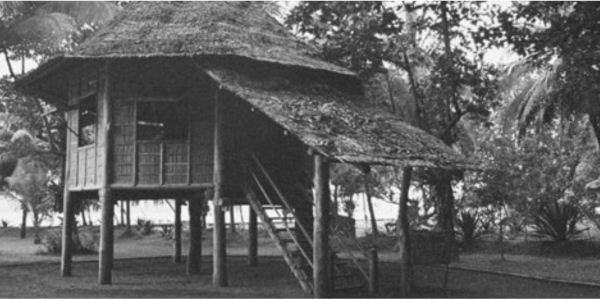

Now
Now

Then⇆
Dapitan, Zamboanga del Norte · Mindanao
Four years of exile that became a mission of service to the Filipino people.
From 1892 to 1896, Rizal was exiled to the quiet town of Dapitan in Mindanao. Rather than despair, he transformed his exile into a period of extraordinary productivity. He built his home with his own hands, established a school for local boys, constructed a water pipeline from a mountain spring, and opened a medical clinic for the townspeople. The Rizal Shrine preserves his actual house and its surrounding grounds, largely intact.
Location
Pinned location on Google Maps
Then vs. Now
Now

ThenDid You Know?
"I live in hope that someday the dawn will come and the darkness will lift."
Continue Exploring